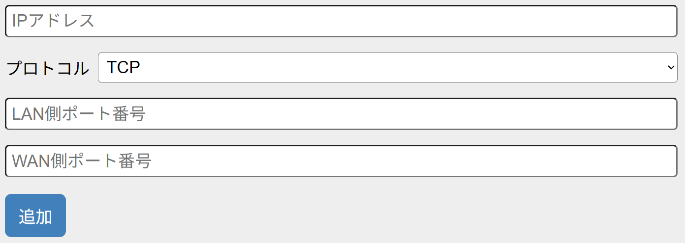

1. 本機器の設定画面を開きます。
2. 「WAN設定」-「ポートフォワーディング」を押します。
3. 設定情報を入力します。
| 項目 | 説明 |
|---|---|
| IPアドレス | 外部からのアクセスを許可したい機器の IP アドレスを入力します。 【例1】オンラインゲームをしたい場合は、ゲームをする機器（ゲーム機やパソコン）のIPアドレスを入力します。 【例2】ネットワークカメラの映像を外部から視聴したい場合は、ネットワークカメラのIPアドレスを入力します。 |
| プロトコル | TCP、UDP、TCP/UDP から選択します。 |
| LAN側ポート番号 | インターネット上から見えるポート番号を 1 つ入力します。 |
| WAN側ポート番号 | インターネットに公開するポート番号を 1 つ入力します。※ ネットワークゲームやネットワークカメラなどのポート開放の場合は［LAN 側ポート番号］と同じポート番号を指定します。 |